Inspect & maintain
Survey cables, pipelines and foundations on a schedule, flag corrosion, scour and damage early, and work towards light intervention by the vehicle itself.
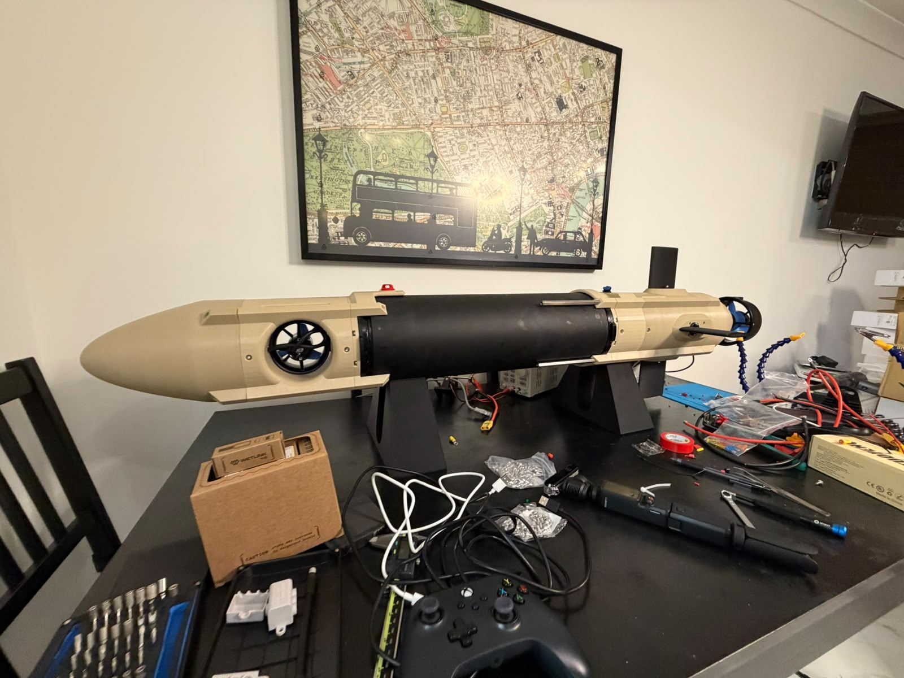
Autonomous underwater vehicles · London
We design and build low-cost underwater vehicles to inspect and maintain subsea infrastructure, serve as an open platform for hardware and software research, and work together as swarms.
Who we are
We are engineering students at Imperial College London working across mechanical design, power and propulsion, electronics, software and autonomy. Every part of our first vehicle, AUV1, has been designed, printed, wired and assembled by the team.
Marine robotics is almost absent from UK engineering degrees, despite how much of our energy and data now runs under the sea. We started ICAUV to change that, and to build technology that matters offshore.
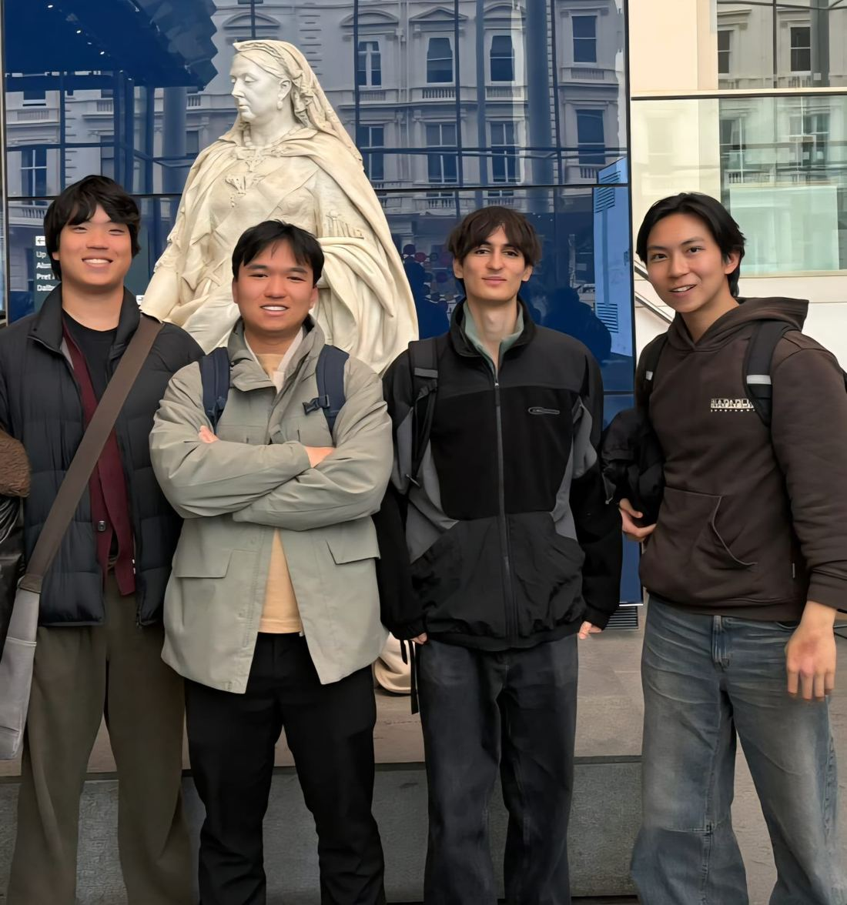
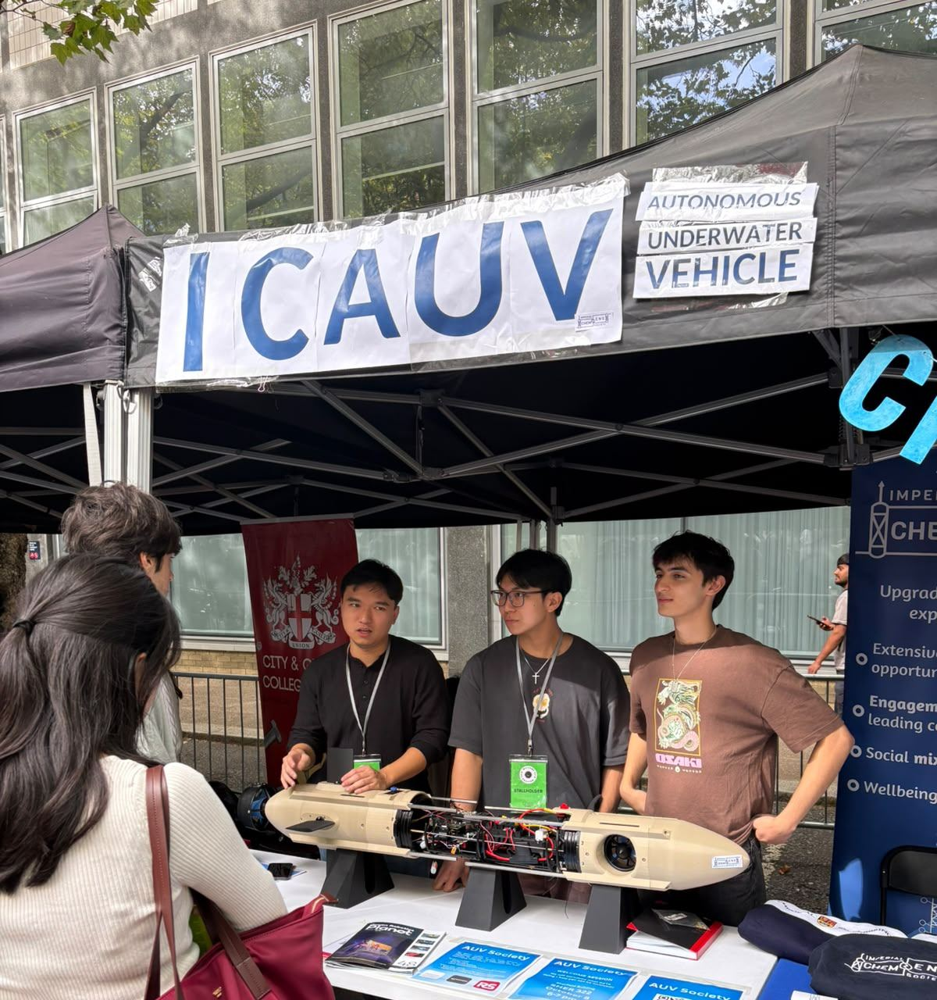
What we're building towards
Subsea infrastructure is critical, ageing and hard to reach, and today it's mostly inspected by divers or tethered ROVs launched from expensive crewed vessels. We're building small, affordable vehicles that can take on that work, double as an open platform for research, and scale up into cooperating swarms.
Survey cables, pipelines and foundations on a schedule, flag corrosion, scour and damage early, and work towards light intervention by the vehicle itself.
Modular sealed canisters and an open software stack make AUV1 a testbed: swap in new sensors, thrusters or autonomy code and get real data back.
3D-printed structure, off-the-shelf electronics and no support vessel on station bring underwater data within reach of far more operators and labs.
Many small vehicles and shore nodes working together: wider coverage, built-in redundancy, and missions no single vehicle could run.
The stack
A slender, sectioned vehicle built around independently sealed canisters on a shared chassis, so any section can be opened or swapped without touching the rest. It's designed to evolve rather than be rebuilt.
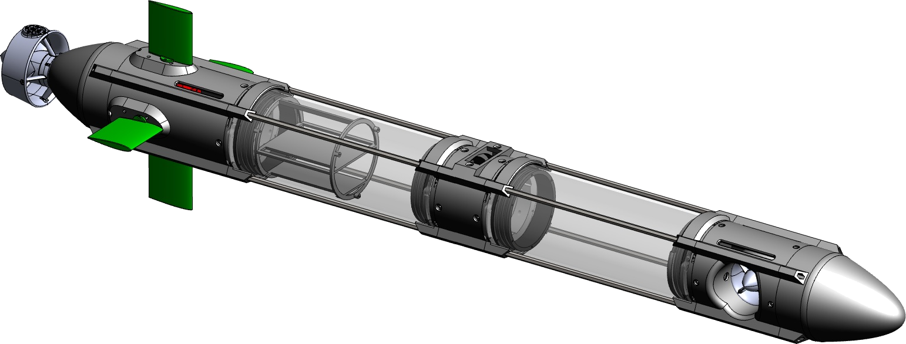
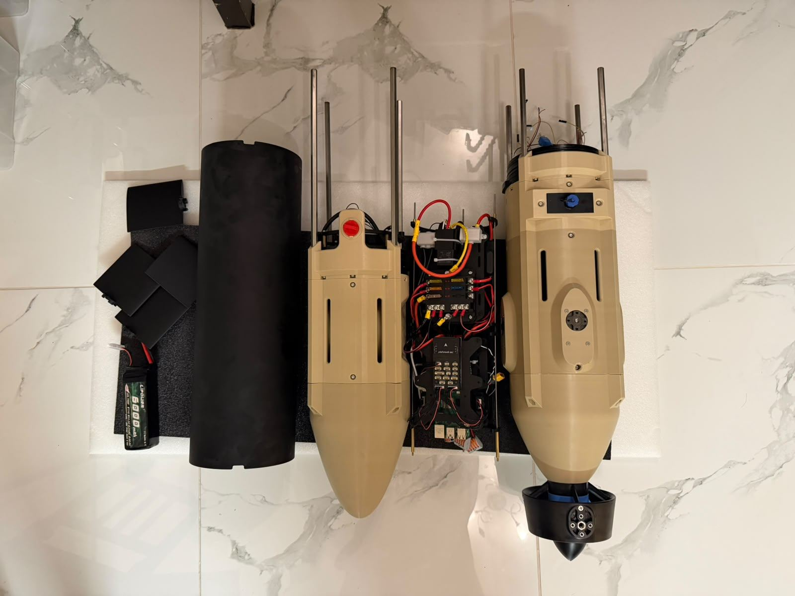
Hardware
Electronics live only in sealed canisters inside a free-flooded printed structure. The main aluminium canister doubles as a heat sink for the motor controllers.
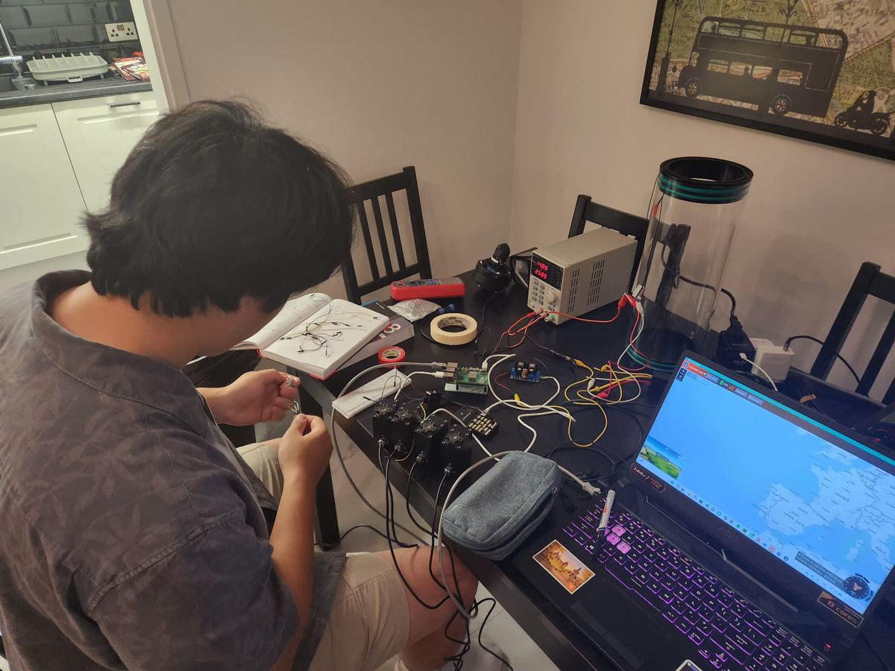
Control
A flight controller handles sensors, arming, telemetry and failsafes; a companion computer runs the mission. Fin mixing, PID loops and the depth-to-pitch cascade are protocol-free, so they can be unit-tested without hardware.
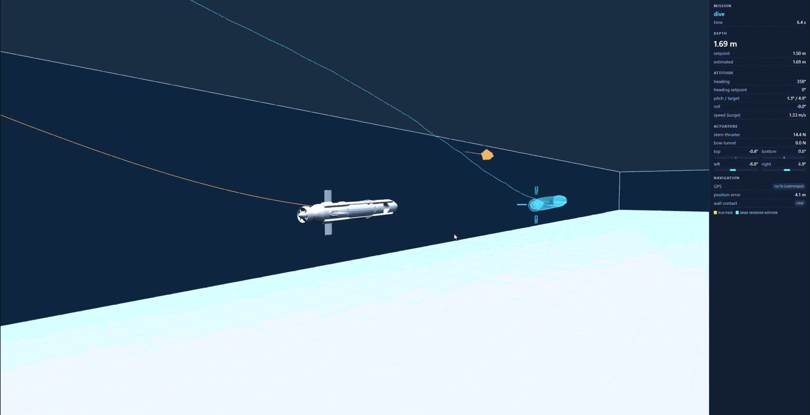
Simulation
Our own dynamics model has added mass, quadratic drag, fin lift, thruster lag and realistic sensor noise. It runs through the same interface as the real vehicle, so a mission script runs unchanged in simulation or in the water.
What we're working on now
Hull modules are printed, the first canister is assembled with its dome endcap and seals, and power and control electronics are under test on the bench.
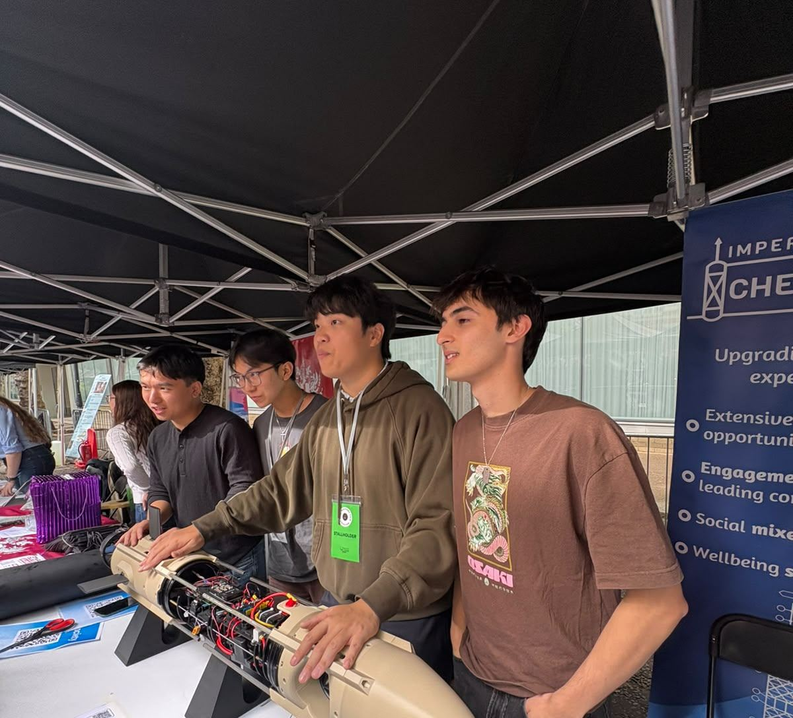
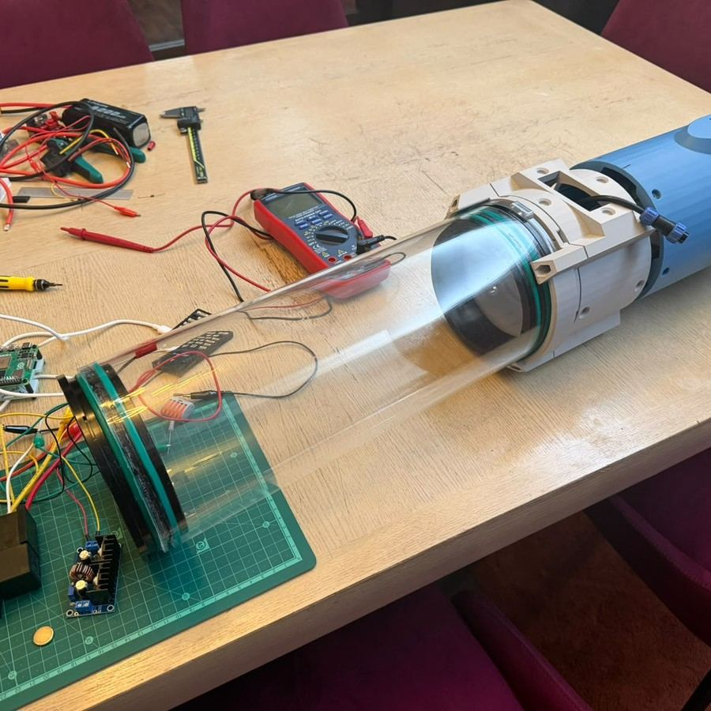
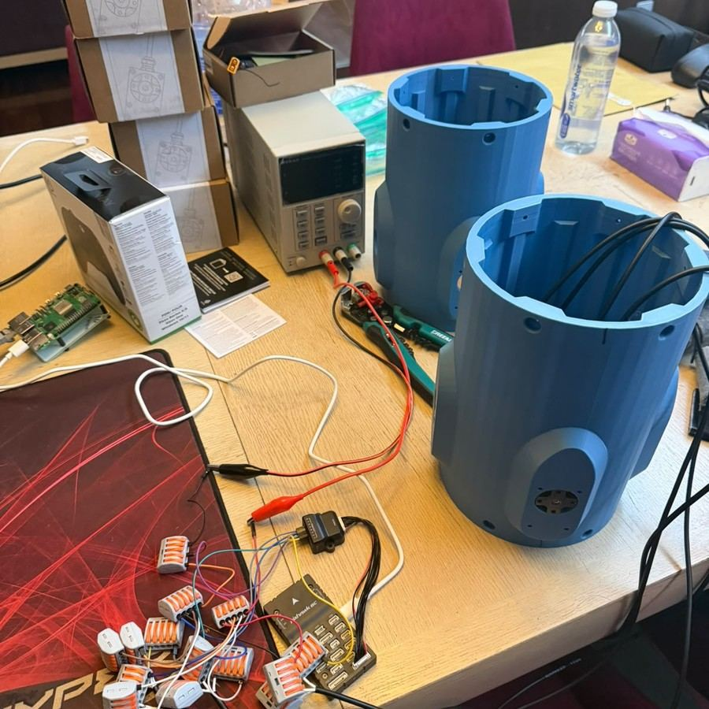
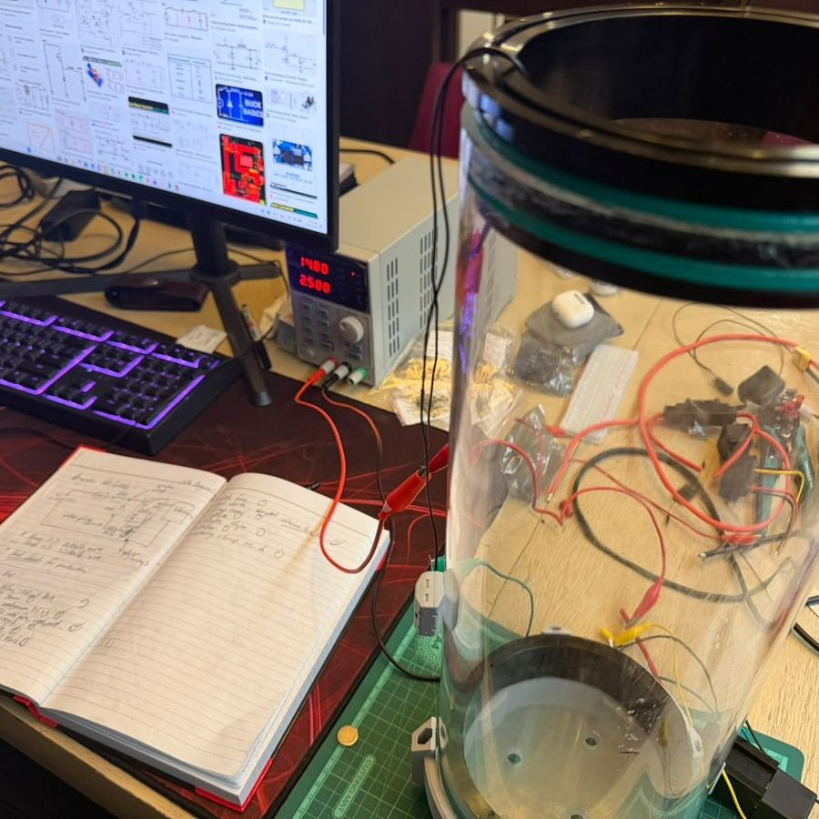
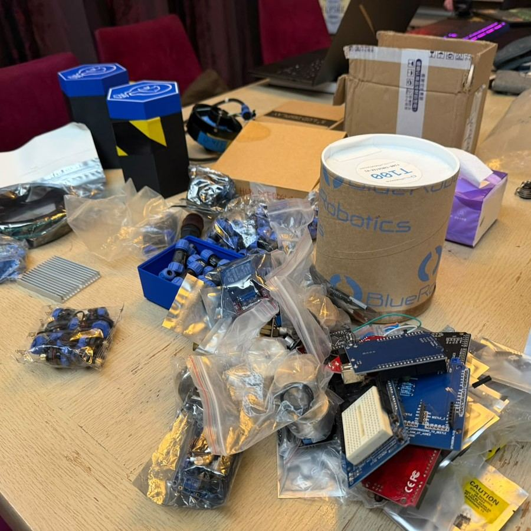
Float and ballast trim, seal and pressure verification, then measuring the hydrodynamic coefficients our simulator currently estimates: drag from straight-line runs, added mass and damping from free-decay tests, fin lift from step inputs.
Partnerships
Operators, industry partners and engineers: we'd love to talk. Our software and simulator are public, so feel free to look before you reach out.